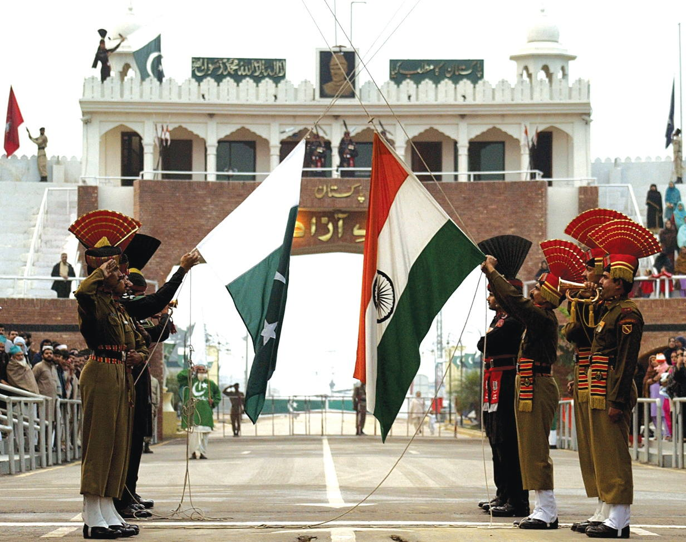
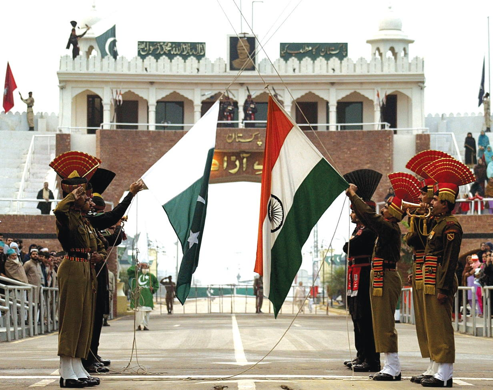

There are so many amazing tourist attractions to visit in Punjab! From historical sites like the
Badshahi Masjid and the Wagah Border to the natural beauty of the Himalayas and the Indus River,
there is something for everyone. In this blog post, we will share with you our top picks for the best tourist
attractions to visit in Punjab.
So if you are planning a trip to Punjab, be sure to check out these amazing tourist attractions!
There is something for everyone in this beautiful region of Pakistan. Punjab means five rivers
that include Ravi, Chenab, Jhelum, Sutlej, and Indus rivers. Given below are some of the best tourist attractions
in Lahore Pakistan.
The Badshahi Masjid is one of the most popular tourist destinations in Punjab. This stunning mosque was built
by Emperor Aurangzeb in 1673 and is considered to be one of the most beautiful mosques in the world.
The mosque is located in Lahore, the capital of Punjab, and is a must-see for anyone visiting the region.
mosque was built by Emperor Aurangzeb in 1673 and is considered to be one of the most beautiful mosques
in the world. The mosque is located in Lahore, the capital of Punjab, and is a must-see for anyone
visiting the region.
Wagah Border is another popular tourist attraction in Punjab. This is the border crossing between India and Pakistan
and is a popular spot for tourists to watch the daily ceremony called the “Beating Retreat”. This ceremony
involves soldiers from both countries marching in formation and lowering the flags at the end of the day.
It is a stirring sight and is a must-see for anyone visiting the region.
 

The Himalayas are another popular tourist destination in Punjab. This stunning mountain range is located on the border
between India and Pakistan and is home to some of the most beautiful scenery in the world. The Himalayas are
a popular spot for trekking and hiking and are a must-see for anyone visiting the region.
The Indus River is another popular tourist destination in Punjab. This long river runs through the heart of Punjab and
offers some stunning views. The river is a popular spot for rafting and kayaking and is a must-see for anyone
visiting the region.
The Katas Raj temple is another popular tourist destination in Punjab. This ancient temple is located in the Cholistan
Desert and is dedicated to the Hindu god Shiva. The temple is a beautiful example of Hindu architecture and
is a must-see for anyone visiting the region.
Derawar Fort is another popular tourist destination in Punjab. This stunning fort is located in the Cholistan Desert and is one
of the largest forts in the world. The fort is a beautiful example of Mughal architecture and is a must-see
for anyone visiting the region.
Minar-e-Pakistan is another popular tourist destination in Punjab. This iconic tower is located in Lahore and is dedicated to the
creation of Pakistan. Minar-e-Pakistan is situated in the old Minto Park presently known as Iqbal Park.
The tomb of Jahangir is another popular tourist destination in Punjab. This beautiful tomb is located in Lahore and is dedicated to the
Mughal Emperor Jahangir. The tomb is a stunning example of Mughal architecture and is a must-see for
anyone visiting the region.
The Noor Mahal is another popular tourist destination in Punjab. This beautiful palace is located in Bahawalpur and was built by the Nawab
of Bahawalpur in the late 19th century. It was built by Nawab Subah Sadiq Muhammad IV in memory of his
beloved wife. It is under the Pakistan Army since 2001.
Rohtas Fort is another popular tourist destination in Punjab. This impressive fort is located in the city of Jhelum and is a UNESCO World
Heritage Site. The fort was built by the Mughal Emperor Shah Jahan in the 16th century and is a must-see for
anyone visiting the region.
The Shalimar Gardens are another popular tourist destination in Punjab. These beautiful gardens were built by the Mughal Emperor Shah Jahan
in the 17th century and are a must-see for anyone visiting the region. The gardens are located in Lahore and offer some
stunning views.
Food Street Fort Road is a popular tourist destination in Punjab. This charming street is located in Lahore and is famous for its delicious
food. The street is home to many popular Pakistani restaurants and is a must-see for anyone visiting the region.
The Khewra Salt Mines is another popular tourist destination in Punjab. These ancient mines are located in the city of Khewra and are the
second largest salt mines in the world. The mines are a popular spot for tourists to visit and offer some stunning views.
This is a Mosque ( Masjid ) that is built of salt inside the Khewra salt mines.
Khewra Salt Mines were said to be discovered by Alexander the Great in 326 BC. Well, that’s not exactly correct. The true credit for discovering
Today, the Khewra salt mines are the second largest in the world. They turn out 325,000 tons of salt a year. The output over its lifetime is estimated
Kashmir Point Murree is a popular tourist destination in Punjab. This beautiful viewpoint is located in the city of Murree and offers stunning views of
the salt in Khewra goes to his horse. This is because when his army stopped to rest in Khewra, Alexander’s horse and the horses
of his soldiers began licking the stones on the ground. A brave soldier tried it himself and discovered the salty flavor.
to be 220 million tons. Amazingly, this isn’t even a dent into the salt that’s stored here, which is estimated to be about
6.687 billion tons. The mine is 748 feet deep with 11 stories, the mine is filled with tunnels that run nearly half a mile
into the mountain. Only 50% of what is mined is taken out, the other 50% is used as support columns in the
enormous mine.
Kashmir Point Murree
the Kashmir Valley. The viewpoint is a popular spot for tourists to visit and is a must-see for anyone visiting the region.